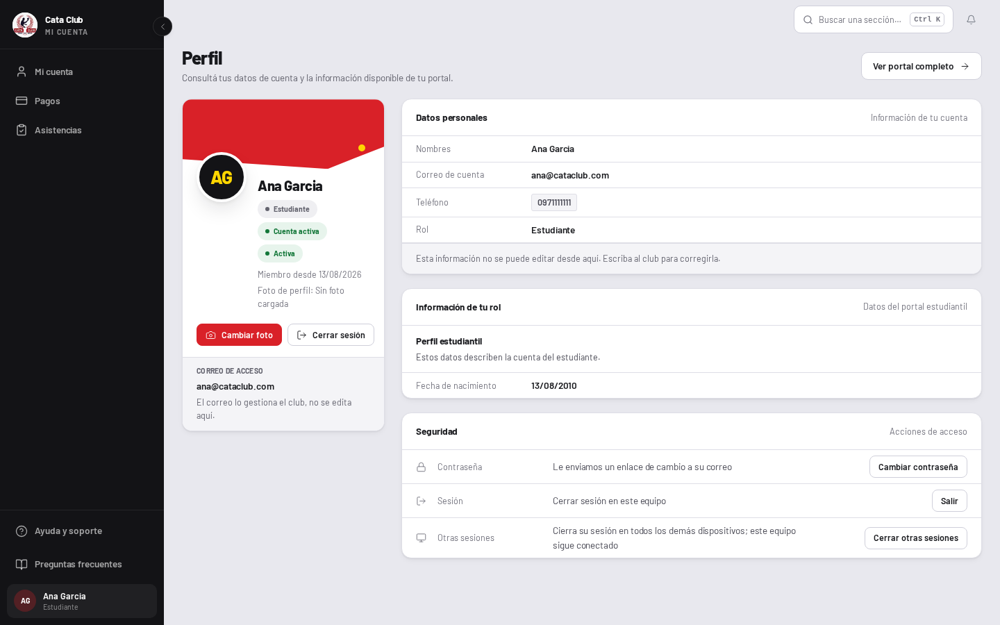
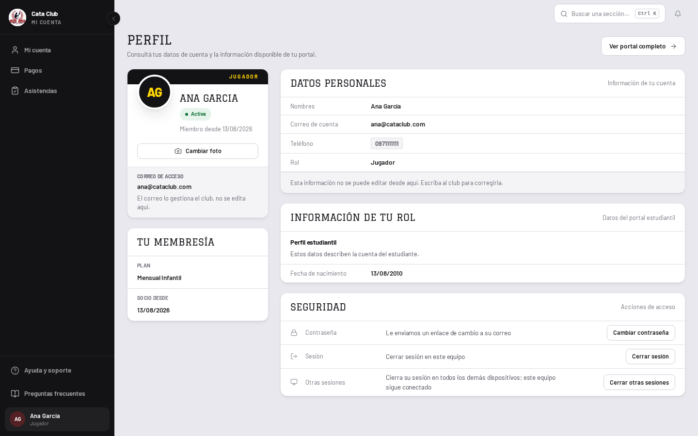
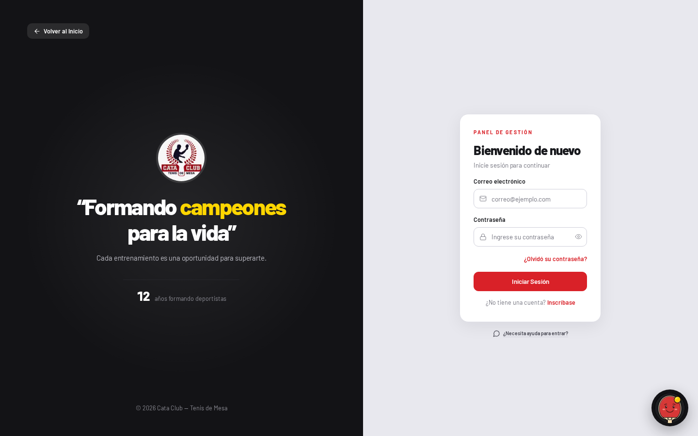
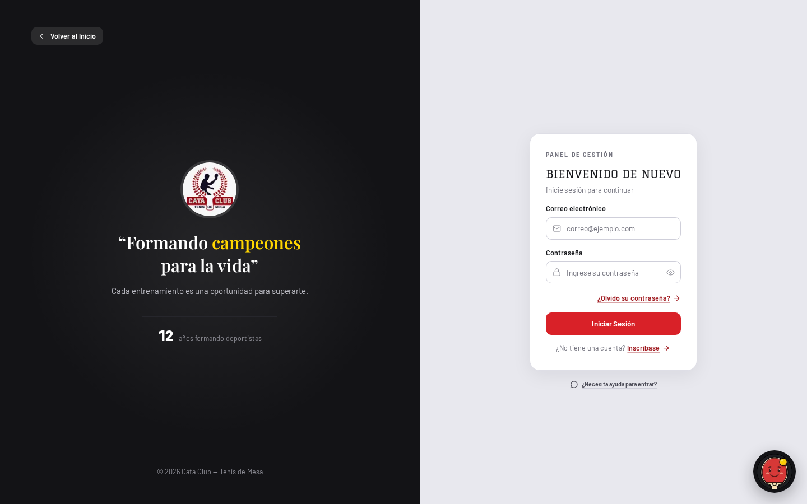

Fase 3 · Faro 3 de 3
La cara al socio. Dos pantallas capturadas contra el entorno de QA con el mismo guión de medición que Miembros, a 1440×900, antes y después, con la misma base de datos. El código está escrito, la suite en verde y el tipo comprobado.
La imagen de QA ya traía la fundación y Graduate en los títulos de página, así que el antes y el después aíslan lo que cambió en estas dos pantallas y no repiten lo que ya se revisó en Miembros.
El aire muerto se mide igual que siempre: la distancia entre el borde inferior del contenido más bajo y el fondo de la ventana, dividida por el alto de la ventana. Es el hueco que la persona ve vacío sin scrollear.
| Pantalla | Estado | Antes | Después | Qué lo movió |
|---|---|---|---|---|
| Perfil | Jugador con membresía | 12% · 105px | 10% · 91px | La columna izquierda dejó de ser una tarjeta sola sobre lienzo pelado. |
| Login | Formulario en reposo | 23% · 205px | 23% · 208px | Sin cambio, y es la respuesta correcta — ver abajo. |
El 23% del login no se toca. Ese hueco no es un descuido: es la
consecuencia de centrar la tarjeta en el eje vertical de la página, que es exactamente lo
que el dueño del producto pidió al rechazar la versión anterior —
«el login y la parte izquierda no están bien centradas, se ven desalineadas». Las
dos mitades comparten una grilla 1fr / auto / 1fr, y bajarlo significaría
descentrar la tarjeta o inventar contenido para el riel de abajo. Se prefirió reportar el
número plano antes que mejorarlo rompiendo una decisión ya tomada. Lo que se arregló acá
es tipográfico y de color, no espacial.
La medición del perfil es la del jugador, que es la cuenta por la que el cliente se quejó. Una cuenta de staff no tiene tarjeta de membresía y conserva un hueco mayor en su columna izquierda; está anotado en «Lo que falta».


El único gesto de marca era el gesto prohibido.
La tarjeta de identidad dibujaba una banda roja de 100px con clip-path
sobre su borde superior. DESIGN.md lo prohíbe por nombre: «es el
recurso más repetido de las interfaces genéricas y es exactamente el reproche que
originó este sistema». Además gastaba el rojo —el token reservado para la acción—
en 100px de decoración, al lado de un botón que era rojo por un motivo real. Ahora lleva
el hombro de caucho (D7), con el antetítulo en amarillo, y es la única
tarjeta de la pantalla que lo lleva. El avatar sigue puenteando un borde; ahora el de
caucho. De paso, el contraste: la banda obligaba a 112px de relleno para que ningún
texto cayera sobre ella (tinta sobre rojo mide 3.6:1); amarillo sobre caucho mide
13.13:1 y es el par que el riel ya gasta.
Tres palabras para la misma persona, en una sola pantalla.
«Estudiante» en la insignia, «Alumno» en la lista de roles y «Jugador» en el kit. D9 ya
había unificado en Jugador, la palabra que la persona leyó el día que
entró al club, y IdentityCell la usaba desde entonces; las dos funciones de
auth-utils.ts eran las últimas rezagadas. El pie del riel también dice
«Jugador» ahora, porque sale de la misma función. Se movió la palabra y
nada más: la ruta sigue siendo /student y el enum del backend sigue siendo
ALUMNO.
El club no aparecía, y no era por falta de datos.
La pantalla ya llamaba a fetchStudentPortal(), y ese payload traía
categoria, modalidad, fechaActivacion,
fechaFin y recentSessions. Se leía el estado y la fecha de
nacimiento; el resto se descartaba. Eso es el «perfil genérico» completo: datos
tirados, no datos faltantes. La tarjeta «Tu membresía» los pone en pantalla
sin una sola llamada nueva —hay un test que fija que la cuenta de
llamadas sigue siendo una— y sin inventar nada: para la cuenta capturada el payload no
trae fecha de fin, así que esa fila no existe.
Nombraba ausencias donde el sistema dice que no se nombran.
«Foto de perfil: Sin foto cargada» explicaba con una frase lo que el avatar de al lado ya mostraba, y «Miembro desde —» le daba una línea, una etiqueta y una raya a un dato que no existe. La celda de identidad nunca nombra una ausencia: las dos se fueron, y la fecha se dibuja solo cuando la hay. «Cuenta activa» también, por otro motivo: era verdad, pero era infalsificable —nadie la vio nunca ausente ni la verá— y una insignia que no puede variar es una decoración con forma de estado.
Dos botones rojos a la vez, y una acción con dos nombres.
Con el staff editando su teléfono había dos rojos en pantalla: «Guardar» en el
encabezado y «Cambiar foto» en la tarjeta. «Cambiar foto» pasó a secundario —la acción
primaria vive en el encabezado— y hay un test que cuenta los rojos de la pantalla y
exige exactamente uno. Aparte, el mismo logout() existía dos veces, como
«Cerrar sesión» en la tarjeta y como «Salir» en Seguridad. Queda una sola vez, en
Seguridad, que es donde ya viven las otras dos acciones de sesión, y con la palabra que
nombra el acto.
Ningún título de tarjeta estaba en su paso.
Los tres h2 eran text-sm font-bold: 13.5px de Barlow, que es
el paso denso, el tamaño de una celda de tabla. O sea que el título de una
tarjeta y los valores de adentro medían lo mismo y se distinguían solo por el grosor.
Ahora toman el paso title —Graduate, 20px, versalitas— que es la misma
corrección que PageHeader ya había hecho un nivel más arriba. Sin clase de
peso: Graduate tiene un solo corte de 400, y pedirle negrita hace que el navegador la
falsifique.


La voz del club estaba en la tipografía de la interfaz.
«Formando campeones para la vida» es literalmente el club hablando en primera persona,
que es el único trabajo que DESIGN.md le da a Playfair. Playfair estaba
cargada en todas las rutas y no se usaba en ningún archivo de
src/: una familia de marca comprada, servida y gastada en nada. El
lema la toma ahora, en el paso voice —que también hubo que crear, porque
DESIGN.md lo declara desde el principio y la escala de Tailwind nunca lo
tuvo—. El título de la tarjeta pasó a Graduate, que es el mismo defecto que ya se había
arreglado en PageHeader.
La medida se volvió a derivar midiendo, no estimando.
El clamp(25rem, 72%, 44rem) del bloque de marca estaba calibrado contra
Barlow ExtraBold a 46px, y Playfair pone otro ancho por carácter. Se midió en Chromium
contra el woff2 que sirve el producto: el lema mide 507px sin cortar en
el techo de 31px del clamp, su primera línea natural («“Formando campeones») mide
326px, y la línea de apoyo de abajo mide 350px. De ahí
sale clamp(22.5rem, 72%, 31rem) = 360px…496px: 10px de aire sobre la línea
de apoyo en el piso, 11px por debajo del ancho en que el lema colapsa a una sola línea
en el techo. Resultado: dos líneas en todos los anchos desde split, donde
antes derivaba de 3 a 2 a 1. En teléfono el tope pasó de 15ch —que contra
Playfair da ~150px y lo parte en cuatro— a 16rem, medido igual.
Seis elementos rojos, uno solo era la acción.
El antetítulo, los dos enlaces, las dos líneas de error y el botón, todos del mismo
color y con tres comportamientos distintos. El antetítulo perdió el rojo (es una
microetiqueta que orienta y no se aprieta). Los errores pasaron a
state-bad, que es la tinta de error de la rampa —y de paso arregla un
problema de contraste real: cata-red como texto mide 4.10:1 sobre papel y
no llega a AA—. Queda un rojo de acción: el botón.
Los enlaces no parecían enlaces.
Ni subrayado ni flecha, y con el mismo peso que un error. DESIGN.md es
explícito: «Lo que navega no es un botón: es un enlace subrayado en rojo, con flecha
cuando apunta a otra pantalla». Los dos van a otra pantalla, así que los dos llevan
flecha. El rojo que toman es red-dark, que es el que el sistema reserva
para texto por la misma medición de arriba. El subrayado es lo que separa los dos
trabajos del color: el botón se aprieta, los enlaces se siguen. El enlace de
«Inscríbase» sigue sin piso de 24px a propósito: la SC 2.5.8 de WCAG 2.2 exime a un
enlace embebido en una oración, y ponérselo abriría la línea que lo contiene.
El fallo de credenciales no dejaba marca en el formulario.
Una contraseña incorrecta producía un toast y nada más: unos segundos después, con el
toast ya ido, la pantalla era idéntica a una que nunca se envió. El toast sigue siendo
el canal que anuncia —hay dos tests que lo fijan, y también que no
vuelva la caja .alert-error—, y lo que se agrega es lo que queda cierto
después: borde de estado en los dos campos, aria-invalid, y un mensaje
debajo. Se borra en cuanto la persona toca cualquiera de los dos campos.
El campo se marca solo cuando el error es del campo. De los seis tipos de
fallo que el login distingue, únicamente invalid_credentials pinta los campos.
Un timeout, un backend caído o un servidor mal configurado no son la tecleada de nadie, y
pintarle los campos de rojo a alguien manda a revisar algo que nunca estuvo mal. El mensaje
tampoco dice cuál de las dos mitades falló, porque el backend responde igual para un correo
inexistente que para una contraseña equivocada: distinguirlos le diría a un desconocido qué
cuentas existen.
La regla del estado flaco pide diseñar primero con el socio nuevo. Acá el dataset de QA lo entrega solo: ninguna de las cuatro cuentas de jugador sembradas tiene asistencias registradas, y ninguna membresía trae fecha de fin. Las capturas de arriba son el estado flaco.
| Dato del payload | En QA | Qué dibuja la pantalla |
|---|---|---|
membership.categoria |
Presente | Fila «Plan» — «Mensual Infantil». |
membership.fechaActivacion |
Presente | Fila «Socio desde» — 13/08/2026. |
membership.modalidad |
Redundante | Ninguna fila. El nombre del plan ya dice «Mensual». |
membership.fechaFin |
Ausente | Ninguna fila. No hay «Vigente hasta —». |
recentSessions |
Vacío | Ninguna tarjeta. La lista existe y está cubierta por test. |
membershipPlans |
Presente | Nada. Es el catálogo del club, no un dato de la persona. |
membership.montoAplicado |
Presente | Nada, a propósito — ver abajo. |
La modalidad se dibuja solo cuando dice algo que el plan no dice. Todos
los planes que el club vende hoy se llaman por cómo se cobran —«Mensual Infantil» con
modalidad MENSUAL, «Mensual Adultos» igual—, así que poner las dos es la misma
palabra dos veces bajo dos etiquetas: el mismo defecto que esta pantalla vino a arreglar,
en chiquito. No se borró el campo, se condicionó: PERSONALIZADA contra un plan
llamado por su temporada sí es una fila que aporta, y hay un test para cada rama.
La plata no entra al perfil. montoAplicado («25.00») viene en
el payload y se dejó afuera: un número solo no dice si está pagado, si se debe o si está
vencido, y «Mis pagos» existe para responder exactamente eso. Un dato que no sirve para
decidir ni para encontrar no entra.
El hueco de la columna izquierda en una cuenta de staff.
Con la tarjeta de membresía, la columna del jugador llega a ~660px contra los ~810px del
espacio de trabajo. Una cuenta de administrador o entrenador no tiene membresía, así que
su columna sigue terminando antes. No se tapó estirando una tarjeta: la
regla del aire («una tarjeta estirada empuja su acción al pie con
margin-top: auto») sirve cuando algo estira la tarjeta de verdad —una
fila de hermanas de igual alto—, y acá el sobrante es de la columna, no de la tarjeta.
Estirar la de identidad 400px para que su pie quede abajo cambia un agujero en el lienzo
por un agujero adentro de una tarjeta. Queda medido y sin arreglar hasta que haya un dato
honesto que ponerle.
La lista de asistencias no se pudo fotografiar.
«Últimas asistencias» está escrita y probada, pero ninguna cuenta del dataset de QA tiene asistencias, así que no aparece en ninguna captura. Se verifica con test (fecha, horario y estado de dos sesiones) y no con imagen. Sembrar asistencias habría alterado los datos contra los que se midió el antes.
«No disponible — consulte con administración» sigue en pie.
Es otra ausencia con nombre, pero vive en una fila de dato, no en la celda de identidad,
y es honesta por un motivo real: fetchMemberships devuelve lista vacía tanto
cuando no hay membresía como cuando la consulta fue rechazada, y las dos cosas no se
pueden colapsar en «sin membresía». Reemplazarla pide distinguir esos dos casos en el
backend. Fuera de alcance de un cambio visual.
«Estudiante» sigue vivo en otras cuatro pantallas.
La unificación en «Jugador» tocó las dos funciones de auth-utils.ts, que son
las que alimentan el perfil y el pie del riel. Los literales de
payments-adapter, members-utils, enroll-utils y
los filtros de asistencia son vocabularios propios de sus pantallas y se barren en la
fase 4, con sus propias capturas.
El 23% de aire muerto del login.
Medido, plano y explicado arriba: bajarlo exige descentrar la tarjeta o inventar contenido, y ninguna de las dos cosas está permitida. Si el dueño prefiere el número antes que el centrado, es una decisión suya y se revierte en una línea.
El paso voice lo estrena una sola pantalla.
Se agregó a la escala porque DESIGN.md lo declaraba y Tailwind no lo tenía,
y hoy lo gasta únicamente el lema del login. El resto de las pantallas donde el club
habla en primera persona —la bienvenida del portal, los estados vacíos— llegan en la
fase 4.
Suite completa, tipos y lint sobre este cambio:
npm test — 186 archivos, 3064 tests, todo en verde.
npm run type-check — sin errores.
npm run lint — sin advertencias.
Las capturas se regeneran con el guión de medición contra QA en
http://localhost:3000, a 1440×900, entrando como
ana@cataclub.com. El índice de todas las comparaciones está en
README.md.